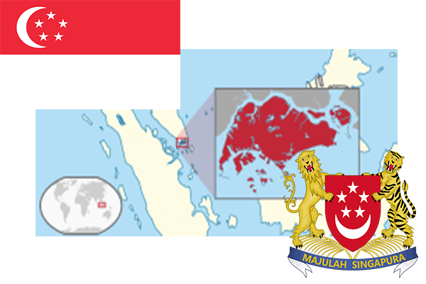

To`liq nomi: Singapur Respublikasi
Region: Janubiy Sharqiy Osiyo
Qonunchilik shakli: Respublika
Mustaqillik kuni: 9 avgust 1965-yil
Poytaxt: Singapur
Maydoni: 692.7 km²
Chegaradosh davlatlari: Malayziya
Aholisi: 5,607,300 (2016-yil)
Aholi zichligi: 7,797/km2
Aholining o`rtacha yoshi: 83,05 yil
Rasmiy tili: Ingliz, Malay tili
Dini: 40% buddizm, 14% xristian va boshqa dinlar.
Pul birligi: Singapur dollari
Telefon prefiksi: +65
Internet domen: .sg
Xalqaro tashkilotlarga a`zoligi: BMT, ASEAN
Dengiz va okeanlarga chiqishi: Janubiy Xitoy dengizi
YIM: Butun: $316.8 mlrd (2017-yil) Jon boshiga: $55,231
Yirik shaharlari: Singapur